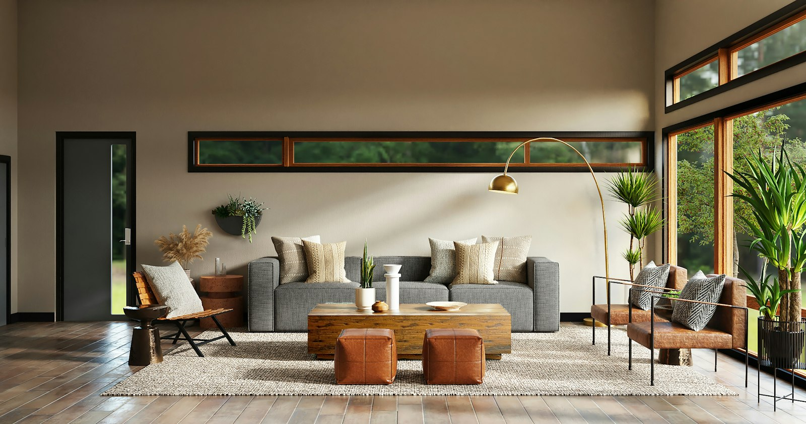
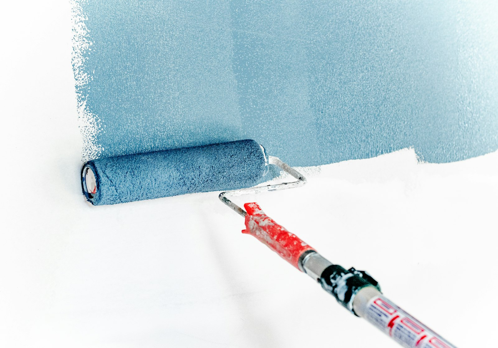

Pour qui est ce guide ?
Ce guide s’adresse aux propriétaires et locataires qui préparent une rénovation intérieure d’appartement ou de maison : rafraîchissement complet, redistribution des pièces, reprise des sols et des murs, ou modernisation d’une cuisine et d’une salle de bain.
Il est pensé pour le contexte parisien et francilien : surfaces parfois contraintes, immeubles anciens, contraintes de copropriété, accès chantier, et attentes élevées sur les finitions. France Deco, entreprise de bâtiment à Neuilly-sur-Seine, y partage la méthode utilisée sur ses réalisations.
Promesse du guide : savoir quoi décider avant de peindre, quoi vérifier avant de poser un sol, et dans quel ordre enchaîner les travaux pour éviter les reprises coûteuses.
Avant de démarrer
1. Clarifier le projet
Listez les pièces concernées et le niveau d’intervention : cosmétique (peinture, sols), technique (électricité, plomberie, isolation) ou structurel (ouvertures, cloisons). Sans ce cadrage, le devis et le planning dérivent vite.
- Quels usages doivent changer (télétravail, famille, location) ?
- Quelles pièces sont prioritaires si le budget est serré ?
- Souhaitez-vous rester sur place pendant les travaux ?
2. Poser un budget réaliste
Prévoyez une enveloppe pour les postes visibles (sols, peinture, cuisine, salle de bain) et pour l’invisible : préparation des supports, reprise d’humidité, mise aux normes électriques, évacuations. Gardez une marge d’imprévus (souvent 10 à 15 %).
Pour situer les aides et les enjeux énergétiques liés à la rénovation, consultez les ressources de l’ADEME et les démarches sur service-public.fr.
3. Diagnostiquer l’existant
Avant de choisir une teinte ou un parquet, vérifiez :
- humidité des murs et des sols, traces de condensation ;
- planéité et stabilité des supports ;
- état des réseaux (électricité, plomberie, ventilation) ;
- contraintes d’immeuble (horaires, évacuation gravats, autorisations).
Un diagnostic clair évite de poser un beau sol sur un support instable ou de peindre un mur encore humide.
Styles & architecture intérieure
À Paris et en proche banlieue, le style doit dialoguer avec le bâti : moulures haussmanniennes, volumes contemporains, maisons de ville, plateaux à réorganiser. L’objectif n’est pas de coller une tendance, mais d’obtenir une lecture cohérente des sols, des murs et de la lumière.
- Haussmannien / classique : préserver moulures et proportions, moderniser sols et peinture sans les écraser.
- Contemporain : lignes simples, teintes continues, rangements intégrés, lumière maîtrisée.
- Maison de ville : enchaînement des pièces, circulation, isolation et acoustique entre niveaux.
Pour voir comment ces choix se traduisent sur chantier, parcourez notamment les projets Sèvres, Médéric et Sources.
Les étapes du chantier
Une rénovation intérieure réussie suit un ordre logique. Inverser les étapes coûte cher.
- Préparation : protection des volumes, accès, tri des démolitions, mise en sécurité.
- Second œuvre / gros œuvre léger : cloisons, ouvertures, isolation, reprises de structure légère.
- Réseaux : électricité, plomberie, ventilation, points d’eau et d’éclairage.
- Supports : ragréage, enduits, doublages, préparation des plafonds et des murs.
- Sols : parquet, carrelage, stratifié ou autre revêtement adapté.
- Peinture et finitions : couches, menuiseries, plinthes, détails, nettoyage.
- Réception : contrôle qualité, reprises éventuelles, remise du lieu.

Peinture & finitions
La peinture est souvent perçue comme la dernière touche. En réalité, 70 % du résultat se joue avant le rouleau : lessivage, rebouchage, enduit, ponçage, sous-couche adaptée au support.
- Choisissez la finition selon la pièce : mate pour les plafonds et séjours calmes, satinée ou lessivable pour couloirs, cuisine et pièces techniques.
- Travaillez la continuité des teintes pour agrandir la lecture des volumes.
- Soignez angles, huisseries, plinthes et raccords : c’est ce que l’œil retient.
Sur un chantier France Deco, la peinture vient après la stabilisation des supports et, le plus souvent, après la pose du sol — avec une protection soignée du nouveau revêtement.
Revêtements de sol
Le sol structure l’ambiance et la durabilité du logement. Le bon choix dépend de l’usage, de l’humidité, de l’acoustique et de l’état du support.
- Parquet : chaleureux, exige un support stable et une finition adaptée au passage.
- Carrelage : robuste pour pièces humides et zones de circulation intense.
- Stratifié / vinyle : solutions efficaces si le support est bien préparé et l’humidité maîtrisée.
Pour comparer des ambiances déjà livrées, consultez la galerie et les fiches projets.
Pièces sensibles : cuisine et salle de bain
Cuisine et salle de bain concentrent réseaux, étanchéité et finitions techniques. Ce sont les pièces où l’improvisation se paie le plus cher.
Cuisine
- Valider implantation, arrivées d’eau, évacuations et circuits électriques avant les façades.
- Prévoir des revêtements lessivables et un éclairage de plan de travail efficace.
- Coordonner plomberie, électricité, carrelage et menuiserie sur un seul planning.
Salle de bain
- Traiter l’étanchéité avant le carrelage.
- Anticiper ventilation, pentes d’évacuation et accessibilité.
- Choisir des finitions résistantes à l’humidité et faciles à entretenir.
Ressources utiles pour approfondir (liens externes) :
- ADEME — rénovation et performance énergétique Repères officiels sur la rénovation, l’isolation et les gestes durables.
- Service-Public — aides à la rénovation Point d’entrée administratif pour les aides et démarches des particuliers.
- Vidéo YouTube — préparer un mur en plâtre avant peinture Tutoriel sur le diagnostic du support, rebouchage, ponçage et sous-couche.
Autres pistes vidéo utiles :
- Vidéo YouTube — peindre un mur étape par étape Protection, rechampissage, application au rouleau et finitions.
- Vidéo YouTube — métier de peintre en bâtiment Présentation du métier et des étapes de rénovation intérieure.
Erreurs fréquentes à éviter
- Choisir les finitions avant d’avoir diagnostiqué l’humidité et les réseaux.
- Sous-estimer la préparation des supports pour « gagner du temps ».
- Lancer cuisine et salle de bain sans planning commun des corps d’état.
- Peindre trop tôt sur un enduit encore frais ou un mur humide.
- Oublier protections, accès, évacuation des gravats et règles de copropriété.
- Comparer des devis sans vérifier le détail des postes (préparation, fournitures, finitions).
Checklist + demander un devis
Avant de lancer les travaux, vérifiez que vous avez :
- une liste claire des pièces et du niveau d’intervention ;
- un budget avec marge d’imprévus ;
- un diagnostic de l’existant (humidité, supports, réseaux) ;
- un ordre de chantier validé ;
- des choix de sols, peintures et pièces humides cohérents entre eux ;
- les accès, autorisations et contraintes d’immeuble anticipés.
France Deco accompagne les projets de rénovation intérieure à Paris et en Île-de-France : sols, murs, peinture, aménagement et modernisation d’appartements et de maisons.
Demander un devis Voir les réalisations
FAQ
Par où commencer une rénovation intérieure ?
Par le diagnostic de l’existant et la définition des priorités. Ensuite seulement viennent le budget détaillé, les choix esthétiques et le planning des corps d’état.
Faut-il refaire les sols avant ou après la peinture ?
Le plus souvent, on prépare les supports, on pose le sol, puis on peint en protégeant le revêtement. L’ordre peut varier selon le type de sol et l’état des murs.
Combien de temps dure une rénovation complète d’appartement ?
De quelques semaines à plusieurs mois selon la surface, le niveau technique et la disponibilité des corps d’état. Un planning écrit reste indispensable.
Quelles pièces demandent le plus d’attention ?
La cuisine et la salle de bain, car elles croisent étanchéité, réseaux, ventilation et finitions techniques.
France Deco intervient-elle à Paris et en Île-de-France ?
Oui. L’entreprise est basée à Neuilly-sur-Seine et intervient sur les projets de rénovation intérieure d’appartements et de maisons à Paris et en Île-de-France. Contactez-nous pour un devis.